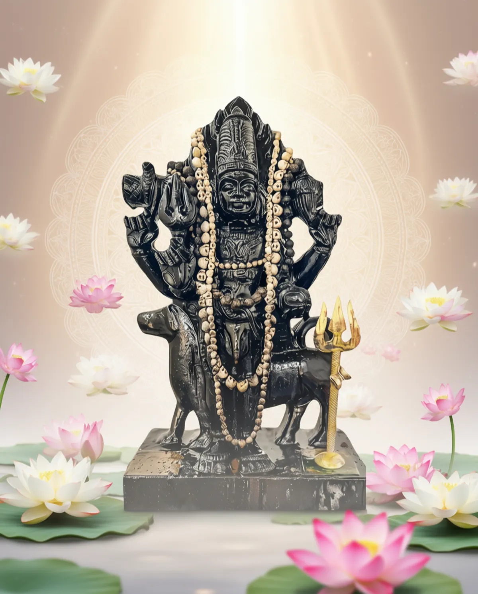

Om Shri GuruBhyo Namah. Jai Khyapa Parampara.
Thank you Ma Adya for permitting me to post this. You sent me here again with amnesia. Please forgive any mistakes ever made, will be made (you are trikaldarshi nothing is hidden from you) and unlock thy potential to sing your glory again with the tools of this age.
Prayer from your eternal dasa, sevak and putra Ashish.
Jai Ma Adya Mahakali, Jai Ma Krishna, Jai Kalabhairava

Kalabhairava Baba, the Guru tatva of Lord Shiva and the firewall of Kashi.
English Recitation Guide
Deva-Raaja-Sevyamaana-Paavana-Angghri-Pangkajam
Vyaala-Yajnya-Suutram-Indu-Shekharam Krpaakaram |
Naarada-[A]adi-Yogi-Vrnda-Vanditam Digambaram
Kaashikaa-Pura-Adhinaatha-Kaalabhairavam Bhaje ||1||
Bhaanu-Kotti-Bhaasvaram Bhavaabdhi-Taarakam Param
Niila-Kannttham-Iipsita-Artha-Daayakam Trilocanam |
Kaala-Kaalam-Ambuja-Akssam-Akssa-Shuulam-Akssaram
Kaashikaa-Pura-Adhinaatha-Kaalabhairavam Bhaje ||2||
Shuula-Ttangka-Paasha-Danndda-Paannim-Aadi-Kaarannam
Shyaama-Kaayam-Aadi-Devam-Akssaram Nir-Aamayam |
Bhiimavikramam Prabhum Vicitra-Taannddava-Priyam
Kaashikaa-Pura-Adhinaatha-Kaalabhairavam Bhaje ||3||
Bhukti-Mukti-Daayakam Prashasta-Caaru-Vigraham
Bhakta-Vatsalam Sthitam Samasta-Loka-Vigraham |
Vi-Nikvannan-Manojnya-Hema-Kingkinnii-Lasat-Kattim
Kaashikaa-Pura-Adhinaatha-Kaalabhairavam Bhaje ||4||
Dharma-Setu-Paalakam Tu-Adharma-Maarga-Naashakam
Karma-Paasha-Mocakam Su-Sharma-Daayakam Vibhum |
Svarnna-Varnna-Shessa-Paasha-Shobhitaangga-Mannddalam
Kaashikaa-Pura-Adhinaatha-Kaalabhairavam Bhaje ||5||
Ratna-Paadukaa-Prabhaabhi-Raama-Paada-Yugmakam
Nityam-Advitiiyam-Isstta-Daivatam Niramjanam |
Mrtyu-Darpa-Naashanam Karaala-Damssttra-Mokssannam
Kaashikaa-Pura-Adhinaatha-Kaalabhairavam Bhaje ||6||
Atttta-Haasa-Bhinna-Padmaja-Anndda-Kosha-Samtatim
Drsstti-Paata-Nasstta-Paapa-Jaalam-Ugra-Shaasanam |
Asstta-Siddhi-Daayakam Kapaala-Maalikaa-Dharam
Kaashikaa-Pura-Adhinaatha-Kaalabhairavam Bhaje ||7||
Bhuuta-Samgha-Naayakam Vishaala-Kiirti-Daayakam
Kaashi-Vaasa-Loka-Punnya-Paapa-Shodhakam Vibhum |
Niiti-Maarga-Kovidam Puraatanam Jagatpatim
Kaashikaapuraadhinaathakaalabhairavam Bhaje ||8||
Kaalabhairavaassttakam Patthamti Ye Manoharam
Jnyaana-Mukti-Saadhanam Vicitra-Punnya-Vardhanam |
Shoka-Moha-Dainya-Lobha-Kopa-Taapa-Naashanam
Prayaanti Kaalabhairava-Amghri-Sannidhim Naraa Dhruvam ||9||
Kalabhairava Ashtakam, attributed to the great philosopher-saint Adi Shankaracharya ji, is a masterpiece of devotional poetry. It is not merely a hymn of praise but a profound meditation on the nature of reality, time, death, and liberation, all seen through the form of Kalabhairava baba, the outwardly terrifying but soft guru tatva of Lord Shiva. Kalabhairava baba is the great filter of the sacred city of Kashi (Varanasi) a metaphysical and a physical location millions flock to every year to wash away sins at the banks of Holy Ganges.
Let's go through each verse, i will provide the translation and a detailed commentary on its intricacies.
Introduction to Kalabhairava baba
Before the verses, it's essential to understand who Kalabhairava baba is.
Kala (काल): This word means "Time" and also "Death." He is the master of time, the one who is beyond time, and the one who embodies death.
Bhairava (भैरव): This means "terrible," "fearsome," or "formidable." His form inspires awe and fear, but this fear is not for the devotee. It is a fear that destroys the devotee's own inner fears, ego, and attachments.
But don't be deceived by his visual depictions of old and new made by AI. He is not a malevolent deity; rather, his fearsome form is like a coconut. Hard shell with a soft center of a Guru.
He is the ultimate Guru of shakti vidya. He guides us to rise above fear, ego, ignorance, and negativity. See the world as witness and rise above the mundane.
He is the supreme guardian (firewall) of the sacred state of Kashi (Ma Kali). He is not a mere kshetrapala but rather a filter you have to go through to attain oneness with MA Kali (Kashi, read her 1000 names). Which implies intracies of shakti vidya of any kind are lost unless Kalabhairava baba finds you true and lets you in.
He grants detachment and vairagya. He hastens the internal samundramanthan (churning) of his bhaktas by taking all the negatives (poison) that arises in their quick uphill journey towards a state of balance (Kashi).
He grants adhara to bhaktas by strengthening their spiritual spine. Allowing them to be free, unconstrained and unlocking the power of our birth designs.
The ashtakam hymn is a bhajana, an act of worshipful surrender to this paradoxical deity who is both terrifying and supremely compassionate.
The refrain (style of repetition in poetry) in each of the first eight verses is "Kaashikaa-Pura-Adhinaatha-Kaalabhairavam Bhaje" (काशिकापुराधिनाथकालभैरवं भजे), which means, "I worship Kalabhairava, the Supreme Lord of the city of Kashi."
This refrain anchors the entire prayer to his specific role as the overseer of Kashi, the state of liberation. Thats why oneness with baba is moksha while still living in the mortal shell.
Jai Kalabhairav baba
Verse 1
Sanskrit:
Deva-Raaja-Sevyamaana-Paavana-Angghri-Pangkajam
Vyaala-Yajnya-Suutram-Indu-Shekharam Krpaakaram |
Naarada-[A]adi-Yogi-Vrnda-Vanditam Digambaram
Kaashikaa-Pura-Adhinaatha-Kaalabhairavam Bhaje ||1||
Translation:
I worship Kalabhairava, the Supreme Lord of the city of Kashi, whose sacred lotus feet are served by Indra, the King of the Devas, who wears a snake as His sacred thread, has the moon on His forehead, and is the embodiment of compassion. Who is praised by Narada and multitudes of other great Yogis, and who is 'Digambara' (clothed by the directions, i.e., naked).
Commentary and Intricacies:
The Paradox of Supremacy and Unconventionality: The first line establishes his supreme authority. Even Deva-Raja Indra, the king of the celestial gods, serves at his feet. This immediately elevates Kalabhairava beyond the conventional divine hierarchy. He is transcendental and oversees all aspects of creation as a supreme authority beyond even the heavenly realms.
Symbolic Attire: His attire is a web of deep symbols. The Vyaala-Yajnya-Suutram (snake as sacred thread) replaces the cotton thread worn by orthodox priests. By replacing it with a snake depicts his nature to be above and beyond all rules, the master of fear and death itself. The snake represents cyclical time, cosmic energy (Kundalini), and mastery over fear and death. By wearing it, He shows he is beyond ritualistic orthodoxy and is the master of life's potent, primal forces. The Indu-Shekharam (crescent moon) is a classic Shiva attribute, symbolizing mastery over the mind and the cycles of time (as the moon's phases mark time).
Terrifying Form, Compassionate Heart: The poet immediately juxtaposes these fearsome images with Krpaakaram (ocean of mercy). This is the central theme: "His terrifying outer form is a shell for an infinitely compassionate core."
Veneration by the Wise: He is not a deity of the ignorant but is vanditam (venerated) by the greatest sages and yogis like Narada. This signifies that true wisdom has to be gained by going into any subject deeply covering all aspects without prejudice (shades of good or bad). That's the true aspect of the jnana.
Digambaram (Sky-Clad): This is a profound philosophical statement. To be naked is to be unburdened by any covering, attribute, or worldly identity. It signifies pure, unadorned consciousness, free from the illusions of Maya. He is the ultimate reality, as it is.
Verse 2
Sanskrit:
Bhaanu-Kotti-Bhaasvaram Bhavaabdhi-Taarakam Param
Niila-Kannttham-Iipsita-Artha-Daayakam Trilocanam |
Kaala-Kaalam-Ambuja-Akssam-Akssa-Shuulam-Akssaram
Kaashikaa-Pura-Adhinaatha-Kaalabhairavam Bhaje ||2||
Translation:
I worship Kalabhairava, the Supreme Lord of the city of Kashi, who is as resplendent as a billion suns, the supreme one who ferries us across the ocean of worldly existence (samsara), who has a blue throat, grants our deepest desires, and possesses three eyes. Who is the Death of Death itself, whose eyes are like lotus blossoms, whose weapon is the trident, and who is imperishable.
Commentary and Intricacies:
Light, not Darkness: Despite his association with darkness and death, he is Bhaanu-Kotti-Bhaasvaram (shining like billions of suns). This is the dazzling light of pure consciousness that obliterates the darkness of ignorance.
The Ultimate Savior: His primary function for a devotee is being a Bhavaabdhi-Taarakam (the ferryman across the ocean of worldly existence). Baba protects the devotee and carries them to the shore of liberation (Kashi).
Niila-Kannttham (The Blue Throat): This refers to Shiva's act of drinking the cosmic poison (Halahala) to save creation. It is a symbol of ultimate compassion; the ability to absorb all the negativity of the world and neutralize it out of pure love. He is kind beyond worldly definitions and accepts surrender for everyone (sur and asur) without prejudice.
Kaala-Kaalam (The Time of Time / The Death of Death): This is perhaps the most profound epithet. It establishes him as the Absolute. If Kala (Time/Death) is the ultimate reality for mortal beings, then Kalabhairava baba is the reality that consumes even Time and Death. He is the substratum upon which time and death play out. Meditating on him is like meditating on eternity itself (MA Kali).
Fierce but Beautiful: The paradox continues. He is the "Death of Death," yet his eyes are soft and beautiful like a lotus (Ambuja-Akssam). This contrast reminds the devotee to look past the fearsome exterior to find the divine grace within. The trident (Shuulam) represents his control over the three Gunas (Sattva, Rajas, Tamas) and the three states of consciousness.
Verse 3
Sanskrit:
Shuula-Ttangka-Paasha-Danndda-Paannim-Aadi-Kaarannam
Shyaama-Kaayam-Aadi-Devam-Akssaram Nir-Aamayam |
Bhiimavikramam Prabhum Vicitra-Taannddava-Priyam
Kaashikaa-Pura-Adhinaatha-Kaalabhairavam Bhaje ||3||
Translation:
I worship Kalabhairava, the Supreme Lord of the city of Kashi, who holds the trident, axe, noose, and staff in his hands; who is the Primeval Cause of the universe, who has a dark-hued body, is the first of all gods, imperishable, and free from all ills. Who is immensely powerful and the supreme lord, and who is fond of the wonderful Tandava dance.
Commentary and Intricacies:
The Tools of a Cosmic Governor: The weapons—Shuula (trident), Tangka (axe), Paasha (noose), Danndda (staff) are not just for destruction. The trident destroys a devotee's triple miseries. The noose binds and removes impurities and karma. The staff represents the authority of cosmic justice (Dharma). They are instruments of cosmic order.
Aadi-Kaarannam (The Primordial Cause): He is not just a deity within creation; he is the source from which creation springs. This aligns with the highest Shaivite and Vedantic philosophies that see Sadashiva as the uncaused cause of everything (ultimate origin).
Shyaama-Kaayam (Dark Body): The dark complexion symbolizes the unmanifest, the formless Absolute (Nirguna Brahman) before creation, from which all colors and forms emerge. It represents the mystery and his infinite potential.
Vicitra-Taannddava-Priyam (Lover of the Wondrous Tandava): The Tandava is Lord Shiva's cosmic dance of creation, preservation, and dissolution. Kalabhairava's love for this dance shows he presides over the entire rhythm of the cosmos. His dance is both terrifying and blissful, a perfect expression of his nature.
Verse 4
Sanskrit:
Bhukti-Mukti-Daayakam Prashasta-Caaru-Vigraham
Bhakta-Vatsalam Sthitam Samasta-Loka-Vigraham |
Vi-Nikvannan-Manojnya-Hema-Kingkinnii-Lasat-Kattim
Kaashikaa-Pura-Adhinaatha-Kaalabhairavam Bhaje ||4||
Translation:
I worship Kalabhairava, the Supreme Lord of the city of Kashi, who is the giver of both worldly enjoyment (Bhukti) and ultimate liberation (Mukti), whose form is praiseworthy and beautiful, who is dearly affectionate to his devotees, who is steadfast, and whose form is the entire universe. Whose waist is adorned with a belt of tiny golden bells that make a melodious, enchanting sound.
Commentary and Intricacies:
The Giver of Bhukti and Mukti: This is a crucial intricacy. Kalabhairav baba understands that all beings need Bhukti (material fulfillment, joy, experiences) on their journey towards Mukti (spiritual liberation). He grants both. This makes him a complete and compassionate God who presides over the full spectrum of existence.
Bhakta-Vatsalam (Affectionate to Devotees): The hymn repeatedly reassures the worshipper. Despite the name "Bhairava" (The frightful), he is like a doting parent to all.
Enchanting Sound Amidst Terror: The detail of the Manojnya-Hema-Kingkinnii (enchanting golden bells) is beautiful. Imagine this fearsome, dark-bodied God, master of death, moving through the cremation grounds of Kashi. The only sound is not of screams but the sweet, tinkling music of his bells. This auditory image contrasts with his visual form, again reinforcing the idea that deep within the terrifying is a captivating, attractive bliss.
Verse 5
Sanskrit:
Dharma-Setu-Paalakam Tu-Adharma-Maarga-Naashakam
Karma-Paasha-Mocakam Su-Sharma-Daayakam Vibhum |
Svarnna-Varnna-Shessa-Paasha-Shobhitaangga-Mannddalam
Kaashikaa-Pura-Adhinaatha-Kaalabhairavam Bhaje ||5||
Translation:
I worship Kalabhairava, the Supreme Lord of the city of Kashi, who is the protector of the bridge of Dharma (righteousness) and the destroyer of the path of Adharma (unrighteousness), who liberates us from the fetters of Karma and bestows well-being, the all-pervading Lord. Whose limbs are beautifully adorned by a coiled serpent of golden hue.
Commentary and Intricacies:
The Cosmic Law Enforcer: This verse clearly defines his role as "Judge Dredd—he is the law". He is the Dharma-Setu-Paalakam, the guardian of the bridge of righteousness that upholds the cosmos. His terrifying aspect is directed only at the Adharma-Maarga (the path of unrighteousness), which he destroys. He is cosmic justice personified.
Karma-Paasha-Mocakam (The Liberator from the Bonds of Karma): Kalabhairava baba is the agent of this process. He severs the intricate knots of Karma that bind a soul to the cycle of rebirth. This act of liberation leads the jivah to its ultimate destination (Oneness with Ma Kali), a state of unending, divine bliss (Su-Sharma-Daayakam).
Svarnna-Varnna-Shesha-Paasha (Golden Serpent): Earlier the snake was a sacred thread. Here, a shining golden snake adorns his body. It can be seen as Shesha, the serpent of infinity, symbolizing his eternal nature and complete control over the primal forces of creation. The golden color contrasts with his dark skin, creating a visually stunning and symbolic image of eternity adorning the infinite void.
Verse 6
Sanskrit:
Ratna-Paadukaa-Prabhaabhi-Raama-Paada-Yugmakam
Nityam-Advitiiyam-Isstta-Daivatam Niramjanam |
Mrtyu-Darpa-Naashanam Karaala-Damssttra-Mokssannam
Kaashikaa-Pura-Adhinaatha-Kaalabhairavam Bhaje ||6||
Translation:
I worship Kalabhairava, the Supreme Lord of the city of Kashi, whose pair of feet are made radiant by the glow of his gem-studded sandals, who is eternal, without a second, our most cherished deity, and is pure (stainless). Who crushes the pride of Yama (the God of Death), and who grants liberation through His terrifying fangs.
Commentary and Intricacies:
Nityam-Advitiiyam (Eternal, Without a Second): This is a direct invocation of the highest philosophy of Advaita Vedanta. It means He is the one, non-dual Absolute Reality. Adi Shankaracharya ji seamlessly weaves his philosophical doctrines into this devotional hymn.
Mrtyu-Darpa-Naashanam (Destroyer of the Pride of Death): This is a step beyond being "Death of Death." It personifies Death as Yama and shows Kalabhairava baba's absolute superiority. Even the God of Death is humbled before him. This provides immense courage to the devotee, assuring them that by taking refuge in Kalabhairava, they transcend the power of death itself and no longer have to wait till the smashana to achieve liberation.
Karaala-Damssttra-Mokssannam (Liberation through Terrifying Fangs): This is one of the most striking paradoxes. His terrifying fangs, an instrument of fear and destruction, are precisely what grant Moksha (liberation). It implies that true freedom is found not by running away from fear, suffering, and death, but by facing it directly like a veera (not fearful to lose a head of two). His very terror is a soteriological tool; it "bites off" the bonds of karma.
Verse 7
Sanskrit:
Atttta-Haasa-Bhinna-Padmaja-Anndda-Kosha-Samtatim
Drsstti-Paata-Nasstta-Paapa-Jaalam-Ugra-Shaasanam |
Asstta-Siddhi-Daayakam Kapaala-Maalikaa-Dharam
Kaashikaa-Pura-Adhinaatha-Kaalabhairavam Bhaje ||7||
Translation:
I worship Kalabhairava, the Supreme Lord of the city of Kashi, whose deafening roar of laughter shatters the myriad shells of the cosmos created by Brahma (the lotus-born), whose mere glance is enough to destroy the intricate web of our sins, and who is a stern disciplinarian. Who is the bestower of the eight supernatural powers (Ashta Siddhis) and who wears a garland of skulls.
Commentary and Intricacies:
Cosmic Supremacy: His Atta-Haasa (loud, roaring laughter) is so powerful it shatters the egg-like universes created by the creator-god, Brahma. This asserts his absolute power over the very fabric of creation, placing him above the Hindu trinity of Brahma, Vishnu, and Rudra in this specific context.
The Power of His Gaze: A single glance (Drsstti-Paata) can burn away lifetimes of accumulated negative karma (Paapa-Jaalam). This emphasizes that his power is effortless. The devotee doesn't need to perform impossible penances; sincere surrender to him is enough for purification. He is an Ugra-Shaasanam (fierce ruler), but his discipline is for our ultimate purification.
Kapaala-Maalikaa-Dharam (Wearing a Garland of Skulls): The garland of skulls represents his conquest over death and ego. Each skull is a universe that has dissolved, a cycle of creation that has ended. It is a reminder of the impermanence of all things and that He is the eternal reality that remains when all else perishes. He wears mortality as an ornament.
Verse 8
Sanskrit:
Bhuuta-Samgha-Naayakam Vishaala-Kiirti-Daayakam
Kaashi-Vaasa-Loka-Punnya-Paapa-Shodhakam Vibhum |
Niila-Kiirti-Kovidam Puraatanam Jagatpatim
Kaashikaapuraadhinaathakaalabhairavam Bhaje ||8||
Translation:
I worship Kalabhairava, the Supreme Lord of the city of Kashi, who is the leader of the host of ghosts and spirits and the bestower of great glory, who is the all-pervading lord who purifies the good and bad deeds (Punya and Papa) of the people residing in Kashi. Who is an expert in the path of righteousness, is the most ancient and eternal, and is the master of the universe.
Commentary and Intricacies:
Lord of the Liminal Spaces: As Bhuuta-Samgha-Naayakam, he is the lord of beings who exist between worlds seen and unseen (ethereal energies). This signifies his dominion over all states of consciousness and existence, not just the physical world. He is the master of the subtle realms.
The Final Accountant of Kashi: This verse summarizes his key role. He is the Punnya-Paapa-Shodhakam, the one who "audits" or "purifies" the sins and merits of those who live in Kashi (state of oneness with MA Kali). He is the divine mechanism that ensures the promise of liberation in the holy city is fulfilled.
Puraatanam Jagatpatim (The Ancient Lord of the Universe): This final descriptive phrase reiterates his timelessness. He is not a recent god or a minor deity; he is the ancient, primordial Lord of all that is.
Verse 9 (The Phala Shruti - Verse of Benefits)
Sanskrit:
Kaalabhairavaassttakam Patthamti Ye Manoharam
Jnyaana-Mukti-Saadhanam Vicitra-Punnya-Vardhanam |
Shoka-Moha-Dainya-Lobha-Kopa-Taapa-Naashanam
Prayaanti Kaalabhairava-Amghri-Sannidhim Naraa Dhruvam ||9||
Translation:
Those who read this enchanting eight-verse hymn on Kalabhairava, which is a means for attaining knowledge and liberation, which increases diverse forms of merit, and which destroys grief, delusion, poverty, greed, anger, and suffering—such people, for certain (Dhruvam), will attain the holy presence of Kalabhairava's feet after death.
Commentary and Intricacies:
This final verse is not a prayer to Kalabhairava but a promise about the prayer itself.
The Power of Devotion: It declares that the very act of reciting this hymn is a powerful spiritual practice (sadhana).
Destruction of Inner Negativity: The hymn acts as a powerful purifying agent, not just for external sins, but for the internal roots of suffering: Shoka (sorrow), Moha (attachment/delusion), Dainya (wretchedness), Lobha (greed), and Kopa (anger). By confronting the ultimate fearsome deity, all lesser worldly fears and afflictions are incinerated.
Dhruvam (Certainly): The hymn ends with a powerful word of assurance. "Dhruvam" means "certainly," "fixedly," "undoubtedly." It provides the devotee with unshakeable faith that their devotion will bear the ultimate fruit: reaching the Lord's feet, a state of complete and final liberation.
Thus concludes the Kalabhairava Ashtakam.
To conclude this commentary, I want to acknowledge that a lot of these teachings are not my own; they are accumulated from reading and listening to others. I thank Bhairava for sending Praveen anna in my present life and I am eternally grateful to him for dropping the JDAM (phat) of jnana that broke through and reached my jivah/atman.
Om Shri Gurubhyo Namah. Jai Khyapa Parampara.
If you find mistakes in this article, please understand I am a seeker and not a Sanskrit scholar. I have tried my best to make this easy to understand for all who seek Ma Kali and Kalabhairav baba. I have surrendered the outcome to them. Rest they will take care. I will keep writing when adesh comes.
If you got this far. Kudos you are meant to read this. Jnana finds its way to those meant to get it. This is the rule of Prakriti. Especially for those in bhairava path (shakti vidya). We all stand on the shoulder of giants, there is no point in gate keeping. We can only become better by teaching and helping each other.
Jai Ma Adya Mahakali. Jai Kalabhairava. Jai Ma Krishna